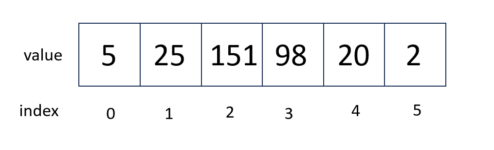

Introduction to Python#
Overview
Questions:
What is the Python programming language, and what is it used for?
What are the advantages and disadvantages of using Python?
What is a Jupyter notebook?
Objectives:
Describe the Python programming language and its uses.
Learn the basics of the Jupyter notebook.
What is Python and why use it?#
All of the software you use on a regular basis is created through the use of programming languages. Programming languages allow us to write instructions to a computer. There are many different programming languages, each with their own strengths, weaknesses, and uses. Some popular programming languages you might hear about are Javascript (used on the web - any website with interactive content likely uses javascript), Python (scientific programming and many other applications), C++ (high performance applications), SQL (databases), and many more.
Python is a computer programming language that has become ubiquitous in scientific programming. The Python programming language was first introduced in the year 1991, and has grown to be one of the most popular programming languages for both scientists and non-scientists. According to the 2022 Stack Overflow Developer Survey, Python is the fourth most popular programming language. Compared to other programming languages, Python is considered more intutitive to start learning and is also extremely versatile. Notably, in contrast to some other languages commonly used in scientific programming, Python is free and open-source. This means anyone can download, install, and use Python. Python can be used to build web applications, interact with databases, and and to analyze data.
Python in Science#
Python is used in many different scientific fields, including chemistry, physics, biology, and astronomy. Python is used in scientific programming for a variety of reasons, including:
Python is free and open-source.
Python is easy to learn (compared to compiled programming languages like C++).
Python has a large community of users and developers.
The Scientific Python ecosystem is a set of packages commonly used for scientific applications. These packages are the foundation of scientific Python programming across a range of disciplines and include NumPy, SciPy, Matplotlib, and Pandas. In our workshop today, we will explore the basics of these foundational libraries.
In chemistry specifically, there are a number of specialized libraries used for processing or analyzing chemical data. For example, there are many libraries for reading and writing chemical file formats, such as the Open Babel library. There are also libraries for cheminformatics, like RDKit, and libraries for quantum chemistry, like Psi4. For experimental chemists, there are libraries for working with and analyzing NMR spectra.
Getting Started#
Our initial lessons will run python interactively through a Python interpreter. We will use an environment called a Jupyter notebook. The Jupyter notebook is an environment in your browser that can be used to write an execute Python code interactively. You can view a Jupyter notebook using your browser or in some specialized text editors.
Jupyter notebooks are made up of cells. Cells can either be markdown (text) or code cells.
This cell is a Markdown Cell.
Code cells have executable Python code in them.
To change the type of a cell you can use the drop down option in the top window.
To run code in a cell, click inside of the cell and press Shift+Enter.
If the code executes successfully, the next cell will become the active cell.
Markdown is a text markup language that Jupyter formats into nice looking text. In markdown, for example, a first level heading is denoted by
# Heading
Double click inside this cell to see what the markdown cell looks like!
Try adding some subheadings (##) or bullet points yourself!
Our First Python Code#
Any Python interpreter can work just like a calculator.
This is not very useful.
Press the Shift Key and the Enter Key (Shift + Enter) at the same time to run (also called “execute”) the code in a cell.
The following cell contains an expression to calculate 3 + 7
3 + 7
10
Assigning variables#
Python can perform calculations for us. To save this value, or other values, we assign them to a variable for later use. Variable assignment is the technical term for doing this. If we do not assign an expression to a variable, we will not be able to use its value later.
The syntax for assigning variables is the following:
variable_name = varaible_value
Let’s see this in action with a calculation. Let’s define some variables for our calculation.
deltaH = -541.5 # kJ/mole
deltaS = 10.4 # kJ/(mole K)
temp = 298 # Kelvin
Notice several things about this code.
The text after # are comments.
The computer does not do anything with these comments.
They have been used here to remind the user what units each of their values are in.
Comments are also often used to explain what the code is doing or leave information for future people who might use the code.
When choosing variable names, you should choose informative names so that someone reading your code can tell what they represent. Naming a variable temp or temperature is much more informative than naming that variable t.
We can now access any of the variables from other cells. Let’s calculate something using our defined variables.
deltaG = deltaH - temp * deltaS
print(deltaG)
-3640.7000000000003
JupyterLab: The tab key#
Jupyter notebooks allow autocomplete using the tab key.
To test this out, try typing pri in the cell below, then press tab on your keyboard twice.
You should see that the word print is completed for you.
After you have the word print add a parenthesis, then start typing delt and press tab twice again.
You will see a list of potential variables or functions you might want to use.
You can use the arrows + the Enter key to select the variable you would like to use.
Using Functions#
When we use print, we are using a function.
Functions are reusable pieces of code that perform certain tasks.
Examples include printing, opening files, performing a calculations, and many others.
Functions have a name that is followed by parenthesis containing the function inputs separated by commas (also called arguments).
function_name(argument1, argument2)
In the previous code block, we introduced the print function. Often, we will use the print function just to make sure our code is working correctly.
Overwriting Variables#
Note that if you do not specify a new name for a variable, then it doesn’t automatically change the value of the variable. For example if we typed
print(deltaG)
deltaG * 1000
print(deltaG)
-3640.7000000000003
-3640.7000000000003
Nothing happened to the value of deltaG. If we wanted to change the value of deltaG we would have to re-save the variable using the same name to overwrite the existing value.
print(deltaG)
deltaG = deltaG * 1000
print(deltaG)
-3640.7000000000003
-3640700.0000000005
There are situations where it is reasonable to overwrite a variable with a new value, but you should always think carefully about this. Usually it is a better practice to give the variable a new name and leave the existing variable as is.
print(deltaG)
deltaG_joules = deltaG * 1000
print(deltaG)
print(deltaG_joules)
-3640700.0000000005
-3640700.0000000005
-3640700000.0000005
Data Types#
Each variable is some particular type of data.
The most common types of data are strings (str),
integers (int), and floating point numbers (float).
You can identify the data type of any variable with the function type(variable_name).
type(deltaG)
float
You can change the data type of a variable like this. This is called casting.
deltaG_string = str(deltaG)
type(deltaG_string)
str
We could have created a variable as a string originally by surrounding the value in quotes "". It doesn’t matter if you use single or double quotes, the first quote just has to match the closing quote.
string_variable = "This is a string"
print(type(string_variable))
<class 'str'>
Lists#
Another common data structure in Python is the list. Lists can be used to group several values or variables together. For today’s workshop, we will be using a more complicated data structure that is part of the pandas library. However, they share many attributes with lists. Lists are a default data type in Python - meaning they are always available no matter what libraries you are using.
You can visualize a list using the illustration below. In our picture, our list has 6 elements. Notably for Python, when counting elements in a list, you start at 0.

Lists are created by adding square brackets around a value or variable.
List elements are separated by commas.
Python has several built in functions which can be used on lists.
The built-in function len can be used to determine the length of a list.
# This is a list
energy_kcal = [-13.4, -2.7, 5.4, 42.1]
# I can determine its length
energy_length = len(energy_kcal)
# I can determine its max
max_energy = max(energy_kcal)
# print calculated values
print('The length of this list is', energy_length)
print('The maximum of the energy values is', max_energy)
The length of this list is 4
The maximum of the energy values is 42.1
To operate on a particular element of the list, you use the list name and then put in brackets which element of the list you want. In Python counting starts at zero. So the first element of the list is list[0].
# Print the first element of the list
print(energy_kcal[0])
-13.4
You can use an element of a list as a variable in a calculation.
# Convert the second list element to kilojoules.
energy_kilojoules = energy_kcal[1] * 4.184
print(energy_kilojoules)
-11.296800000000001
Slices#
Sometimes you will want to make a new list that is a subset of an existing list. For example, we might want to make a new list that is just the first few elements of our previous list. This is called a slice. The general syntax is
new_list = list_name[start:end]
When taking a slice, it is very important to remember how counting works in python. Remember that counting starts at zero so the first element of a list is list_name[0]. When you specify the last element for the slice, it goes up to but not including that element of the list. So a slice like
short_list = energy_kcal[0:2]
includes energy_kcal[0] and energy_kcal[1] but not energy_kcal[2].
print(short_list)
[-13.4, -2.7]
If you do not include a start index, the slice automatically starts at list_name[0]. If you do not include an end index, the slice automatically goes to the end of the list.
Check Your Understanding
What does the following code block print?
slice1 = energy_kcal[1:]
slice2 = energy_kcal[:3]
print('slice1 is', slice1)
print('slice2 is', slice2)
See if you can predict the output, then check yourself in your notebook.
There is a lot more to basic Python, but for the purpose of this workshop, we are going to skip many of the fundamentals so that we can dive into analyzing chemical data. If you’d like to learn more about basic Python, we recommend completing MolSSI’s Introduction to Python lesson. It contains much of what is contained here, plus more details on fundamental programming concepts like loops and logic.